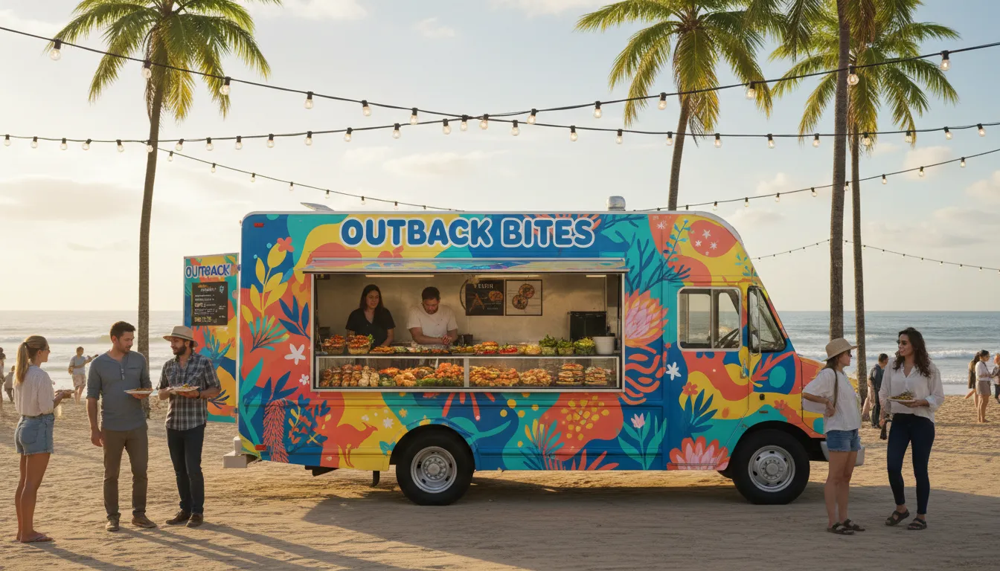
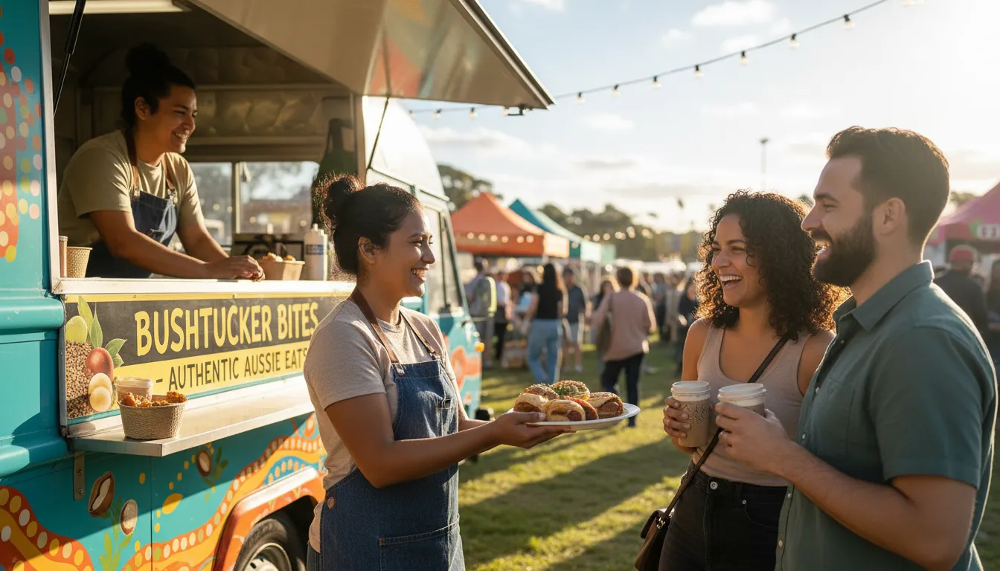
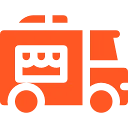
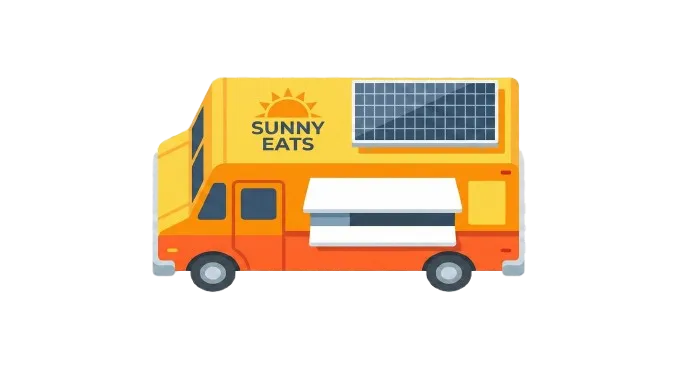

Food Truck Insurance
Protecting Your Passion on Wheels
Quick Quote
Get covered in minutes
From Our Kitchen to Yours
"We’ve spent over 20 years insuring cafés..."
We’ve spent over 20 years insuring cafés, restaurants, bars and everything delicious in between, so expanding into Food Truck & Food Trailer Insurance was a natural next step.
If it cooks, steams, fries, grills, serves or sizzles on wheels… we’ve probably insured it.
Fast, fun and full of flavour!


We Insure:
Whether you’re serving tacos at a night market, brewing coffee at
sunrise or running a whole fleet of tasty vans,
we’ve got you covered.

Food Trucks
Food trucks of all kinds (big, small and everything in between)

Food Trailers
Food trailers & retrofitted caravans

Themed & Vintage
Themed and vintage rigs (Kombis, promo vans, quirky builds—bring it on!)

Coffee & Vans
Coffee vans, pie vans, seafood vans… basically any tasty operation on wheels
All at competitive prices that won’t eat into your profits
What You’re Covered For
The big stuff, the small stuff, and the unexpected stuff.
Fire, Theft or Explosion
Comprehensive protection for major risks.
Malicious Damage
Not everyone appreciates good food… we cover that.
Public & Products Liability
Serving food comes with risks, we handle them.
Collision or Overturning
Protection when things go sideways.
Damage in Transit
Bumps happen! We cover damage while you're moving.
Why Food Truck Owners Love Us
We're with you every kilometre of the journey.

New Vehicle Replacement
First Two Years
Market or Agreed Value
Options to suit your setup
Cover for Recovery & Towing
We've got your back
Signage & Artwork
We'll even cover that!
Australia-Wide Cover
Go where the crowds are!
Flexible Options
Based on when and how you operate
Optional Extras (The Bonus Sauce)
Ready to Start?
Fill out the form below or contact us directly.
Quick Quote
Get covered in minutes
You Asked, We Answered
Straight talk from your Food Truck Insurance Advisors
Food truck insurance is a specialised policy designed to protect mobile food businesses from risks such as vehicle damage, public liability claims, equipment loss, fire, theft, and business interruption.
Advisor's Take: The "best" insurance is the type of pack that includes Business and Vehicle.
You can't just buy 3rd Party Property as a truckie, and NOT have Public Liability for your customers. A high-end policy would look something like this:
- Commercial Motor: For Comprehensive — Replaces or repairs your truck if damaged and covers loss of the insured vehicle (theft of truck).
- Public & Products Liability: If a customer slips or becomes ill from your food, you’ll be protected.
- Business Interruption: Helps you maintain cash flow if you are unable to trade because of an insured event.
Advisor's Take: It depends, but generally somewhere between $800 and $2,500+ per year.
Think of it like build cost: a stripped-back coffee van is cheaper to insure than a big truck with deep fryers and grills. Key factors include:
- Your vehicle & gear value: Make sure you are sufficiently covered for the entire replacement cost.
- Your Menu: Frying foods in hot oil (fryers) is riskier than steaming dumplings.
- Location: Where you trade and leave the truck overnight.
Advisor's Take: Public Liability will cost you between $400 - $600/year for a standalone policy.
But the good news is most food truckers tie this in with their vehicle insurance for a discount. Hint: 99% of councils and event organisers across Australia demand at least $20 Million coverage to allow you to trade - don’t settle for less!
Advisor's Take: The "best" insurance is a comprehensive pack that covers both your Business and your Vehicle.
Don't just get Third Party Property for the truck and forget Public Liability for your customers. A top-tier policy looks like this:
- Commercial Motor Insurance: Covers your truck if it's damaged or stolen (Comprehensive).
- Public & Products Liability: Covers you if a customer slips or gets sick from your food.
- Business Interruption: Keeps cash flow moving if you can't trade due to an insured event.
Advisor's Take: For getting permitted and secured, here is your quick guide:
- Public Liability ($20M): Required for almost all council permits and festival entry.
- Third Party Property / Comprehensive Motor: Required to drive on the road.
- Workers Compensation: Required by law in most states if employing staff (even casual staff!).
With those on hand, you’re green-lit and ready to roll!
Yes. Public liability insurance is usually mandatory to operate at councils, events, and markets across Australia. Vehicle insurance is also legally required if the truck is driven on public roads.
Food truck insurance can include vehicle insurance, public liability, product liability, equipment cover, stock spoilage, fire and theft, and optional business interruption protection.
The amount changes based on truck value, location, turnover and cover level. The average food truck insurance cost ranges from a few hundred dollars per year and goes up depending on specific risks.
Yes. Public liability insurance covers any injuries or damage caused to third parties and product liability deals with claims resulting from food poisoning or contaminated food that has been sold by the business.
No. A standard car policy will not be sufficient. You require a specialist commercial food truck or commercial motor insurance policy that covers your truck and its fitted equipment.
Yes. Built in and portable equipment– Most policies cover fixed as well as detachable things such as grills, fryers, refrigerators, coffee machines etc. (subject to policy restrictions & Conditions).
Yes. fire and theft protection -Insurance might come with or you can add fire and theft insurance to protect your food truck, equipment, and inventory from unforeseen losses.
Yes. Some food truck policies include stock and spoilage insurance, which are designed to cover you for loss caused by power failure, refrigeration breakdown or insured events.
Absolutely. Food truck insurance isn’t just for trucks—it covers coffee vans, mobile cafés, and even those beverage trailers you see at events.
Yep. As long as you let your insurer know and get approval, public and product liability insurance usually protects you at markets, festivals, and other events.
Product liability insurance steps in here. If someone gets sick from something you sold, your policy helps with legal fees and compensation, as long as you stick to the terms.
Yes. Many issuers provide fleet and multi-vehicle policies, which can be smaller priced for businesses with more than a sing food truck or van.
Yes. Business interruption insurance may be able to replace lost income when your food truck is unable to operate due to an insured event such as fire or significant damage.
Yes. The risk of things like fire, theft and vandalism can all happen when the truck is turned off, so it’s important that your insurance policy doesn’t stop working just because your engine does.
Yes. Policies can be customised to reflect your size of business, menu type and from where you operate (your premises may have a lower risk profile than catering or delivering food directly) – all these factors are taken into account when calculating your premium.
Many brokers offer fast quotes and same-day cover, allowing you to start trading quickly once payment is completed.
Optional workers compensation or personal accident cover can be added to protect employees and contractors working in or around your food truck.
A specialist broker understands council requirements, event rules, and food-specific risks, helping you get the right cover at competitive premiums.
You can get a quote by contacting a specialist broker online or by phone, providing details such as truck value, turnover, locations, and required covers.